产业数字化转型与本土人才培养——基于多地区实践的调研报告与路径探索
2025年清华大学学生暑假社会实践品牌项目总结报告
产业数字化转型与本土人才培养——基于多地区实践的调研报告与路径探索
内容摘要：本报告基于对全国九个市县的实地调研，分别围绕第一二三产业展开，系统分析了当前产业发展面临的共性结构性瓶颈，深刻揭示了数字化转型的必然趋势。报告通过全国多市县的具体案例，详细阐述了各地特色产业如何借助电子信息技术实现智能化改造与模式创新。报告重点论证了产业转型与本土人才培养的共生关系，指出通过产教融合的实践教育，能够为区域高质量发展提供核心动力。调研表明，数字化转型是一场系统性革命，需通过技术、生态与人才的协同推进方能实现。
关键词：数字化转型；电子信息产业；本土人才培养；实践调研；产教融合
“E起向未来”品牌项目是电子系社会实践的重要探索，旨在通过“产业调研+科技支教”的双重贡献模式，服务国家数字经济发展战略。过去一年，本项目组织多支实践支队，深入全国9个代表性市县，围绕第一、二、三产业的数字化转型开展系统调研。同时，将调研成果转化为超过200课时的特色科技课程，通过将单片机、传感器等电子信息技术与当地特色产业场景相结合，激发青少年对家乡产业数字化转型的认知与兴趣，为地方培养潜在的本土数字人才。
一、产业发展的共同阻碍与数字化转型的必然性
在国内经济转型升级背景下，我国不同区域、不同层级的产业发展面临一系列共性挑战。无论是农业现代化进程、工业体系升级还是服务业能级提升，虽产业形态各异，但在基础设施、产业链条、人才支撑等维度均显现结构性瓶颈。这些共性阻碍表明传统发展模式难以为继，亟需通过数字化、智能化重塑产业生态。
首先，永州、沂南、阜平三地的农业面临共同困境：一是基础设施落后，数字化水平偏低，传统生产方式导致效率与抗风险能力不足；二是产业链不完善，以初级农产品为主，深加工不足，如沂南肉鸭养殖的产业链延伸和品牌建设有待加强；三是市场竞争力弱，地理标志产品知名度有限，品牌影响力不足；四是人才流失严重，青壮年外流导致从业人口老龄化，技能型人才短缺制约转型进程。
其次，包头、柳州、常德的第二产业面临传统路径依赖与人才外流的双重困境。它们在工业化进程中形成了以重工业或制造业为核心的产业体系，但伴随全球产业格局变化，普遍出现结构单一、创新不足、高技能人才流失等问题。例如，包头专业技术人才缺口达40.2%，柳州数字化人才供给不足，常德智慧城市建设受制于高层次人才匮乏，导致三市难以适应技术迭代与市场竞争，增长动力减弱。
最后，重庆、哈尔滨与广安的第三产业面临三大掣肘：一是产业结构偏重工业，服务业占比低、业态单一，抗风险能力弱；二是数字基础设施薄弱，哈尔滨电子信息产业规模小，广安科教资源有限且人才外流，创新动能不足；三是市场化程度不高，机制僵化，民营活力不足，影响供给质量。这些问题叠加使服务业难以承接产业升级与消费升级需求。在数字经济浪潮下，唯有完善数字基础设施、加强数据要素与平台能力建设、激活本地生态，才能实现科技赋能的高质量发展。
综上所述，从农业困境、工业路径依赖到服务业结构失衡，各地发展共同揭示了数字化转型的必然性。这不仅是破解结构性矛盾的关键抓手，更是培育新质生产力、实现高质量发展的核心引擎。各地需将电子信息技术深度融入产业肌理，系统推动技术赋能、生态重构与人才聚集，争取在新一轮区域竞争中赢得未来。
二、当地特色、支柱产业的数字化转型与电子信息赋能
在明晰了产业发展的共同阻碍与数字化转型的必然性后，本章将深入阜平、沂南等农业县，包头、柳州等工业市，以及重庆、哈尔滨等服务业重镇，通过具体案例，剖析其特色产业如何借助电子信息技术的赋能，探索各具特色的数字化转型路径，从生产环节的智能化改造到商业模式的创新重塑，展现数字技术与实体经济深度融合的实践图景。
（一）阜平、沂南、新田三县的第一产业转型路径
阜平、沂南、新田三县农业的数字化转型呈现出从“初步探索”到“系统构建”的梯度特征。其共同路径在于，均致力于通过物联网、传感器等电子信息技术，实现对生产环境的精准监测与智能控制，并积极探索产业链延伸与模式创新，旨在提升生产效率、资源利用率与产品附加值。
1.阜平：红色老区农业资源的数字化初探
阜平县作为晋察冀革命老区，其农业资源与生态条件构成了当地第一产业的基本面。支队在阜平八一小学的支教与调研中发现，当地农业仍以传统种植为主，但光热资源丰富、空气质量优良，具备发展绿色农业与生态产业的潜力。
尽管阜平在红色文化教育方面已有较好基础，但其农业数字化转型仍处于起步阶段。支队通过开展特色教学，将单片机编程与农业场景结合，初步构建了学生对“数字农业”的认知框架。然而，受限于山区经济与硬件条件，阜平在物联网、VR/AR等高端数字技术的应用上面临挑战。未来，阜平可优先推广低成本传感器与轻量化数据平台，实现对农田环境、作物生长的初步监测，并借助数字教育手段，将红色资源与农业科技融合，发展“红色+绿色”的复合型产业模式
2.沂南：黄瓜与肉鸭产业的系统化数字化转型
沂南县作为山东省农业大县，在第一产业数字化转型方面走在前列。支队深入走访了黄瓜种植基地、肉鸭加工企业及数字化交易平台，全面了解了当地从生产到销售的全链条数字化实践。沂南以黄瓜和肉鸭为核心，形成了全国性的产业集群，其数字化转型主要体现在生产智能化、流通数字化与管理精细化三个方面。
在生产端，支队参访的北于蔬菜交易市场已部署“商易通蔬菜电子交易系统”，实现了从称重、议价到结算的全流程数字化。该系统通过物联网设备采集蔬菜重量与影像数据，结合云端平台实现远程竞价与电子支付，显著提升了交易效率与透明度。支队成员在实地操作中感受到，该系统不仅降低了农户的交易成本，还为政府监管提供了数据支撑。在黄瓜大棚中，支队观察到温湿度传感器、滴灌控制系统等物联网设备的广泛应用，实现了对环境参数的实时监测与自动调节。
在产业链延伸方面，沂南的肉鸭加工企业如山东泉润食品有限公司，通过直播电商与数字营销手段，将“无骨泡椒鸭掌”等产品打造为线上爆款，月销量突破70万单，实现了从生产到消费的数字化闭环。支队在调研报告中指出，沂南的数字化转型不仅提升了产业效率，还催生了新的商业模式与价值增长点。未来，沂南应进一步推动农业数据的标准化与开放共享，实现对产业链全过程的模拟与优化，同时加强中小农户的数字技能培训，缩小“数字鸿沟”。
3.新田：产教融合驱动下的智慧农业生态构建
新田县作为湖南省乡村振兴重点县，其第一产业数字化转型呈现出“产教融合、双轨驱动”的特征。支队发现，新田县通过政策引导与高校合作，将数字技术深度嵌入农业产业链与教育体系，形成了产业升级与人才培育的良性互动。
新田县以东升农场、石羊豆腐工坊等为代表，推动了智能农业系统的落地应用。支队在东升农场亲自操作了水肥一体化系统与手持式光谱仪，体验了如何通过数据驱动实现精准灌溉与品质控制。农场通过部署传感器网络与AI算法，构建作物生长模型，实现了对辣椒、木耳等特色作物的智能化管理。新田县还探索了“农业—能源”循环模式，如鲁丽木业的木材余料发电系统，将农业废弃物转化为能源资产，年创收超780万元，体现了数字技术在资源循环利用中的价值。
（二）包头、柳州、常德三市的第二产业转型路径
包头、柳州、常德的工业转型聚焦于生产流程智能化改造与产业链协同升级。通过广泛应用数字孪生、工业互联网和自动化设备，推动传统制造向“智造”跃迁，并构建跨领域的数据生态，以实现从单一生产向“制造+服务”的综合转型。
1.包头：重工业的智能化升级与稀土产业链延伸
包头的第二产业以钢铁、稀土、军工为核心，其数字化转型主要体现在生产流程智能化与产业链高端化两方面。在钢铁产业中，包钢集团通过引入物联网与数字孪生技术，实现了从冶炼到轧制的全流程智能化管理。支队在参观包钢轨梁厂时观察到，其万能轧生产线已实现无人化、全自动运行，并通过传感器实时采集温度、压力等数据，优化生产参数。此外，包钢在稀土产业中推动“稀土+电子”融合，开发稀土新材料用于电子元件、新能源汽车电机等高端领域，提升资源附加值。支队在稀土博物馆调研时注意到，包头正依托稀土资源优势，构建从采矿到终端应用的数字产业链，推动稀土从“工业维生素”向“电子心脏”转型。
在军工领域，一机集团通过“军转民”策略，将坦克装甲技术转化为民用车辆智能制造系统。支队成员在一机集团参观时，亲自体验了99A主战坦克的模拟驾驶系统，并了解到该集团正研发基于嵌入式控制的智能救护车平台，实现了车辆状态远程监控与故障诊断。这些转型不仅提升了产品竞争力，也为电子信息企业提供了应用场景。未来，包头应进一步推动工业互联网平台建设，构建“稀土—电子—装备”一体化数字生态，实现从“钢城”到“数智谷”的跨越。
2.柳州：制造业全链条数字化与智能终端产业崛起
柳州作为广西工业龙头，其汽车、机械、钢铁三大支柱产业正经历从“制造”到“智造”的深刻变革。在汽车产业中，上汽通用五菱实施“125工程”，建设新能源汽车实验室与智能柔性产线，实现了混动发电机等高技术部件的自主研发与生产。支队在五菱新能源基地调研时，目睹了AGV小车、数字孪生系统在生产中的广泛应用，并通过访谈了解到其“智能岛”产线可实现多车型混流生产，大幅提升了生产柔性。柳工集团则通过全球研发中心与试验平台，推动工程机械电动化与无人化，其电动装载机已实现自主作业与远程调度。支队在柳工参观时，亲自操作了模拟挖掘机控制系统，感受到传感器与算法在重型机械中的核心作用。
在钢铁领域，柳钢集团构建了库区无人行车系统与机器视觉安全监测平台，实现了“透明工厂”目标。支队成员在柳钢调研时，通过后台系统实时查看了设备运行数据与员工定位信息，体会到数据驱动管理的效率提升。此外，柳州正积极布局智能终端与机器人产业，通过政策扶持与生态构建，推动传统制造向“智造服务”转型。未来，柳州应进一步加强产业链协同，推动“车—机—钢”数据互通，建设跨行业工业互联网平台，打造西南地区智能装备制造高地。
3.常德：智慧城市驱动下的产业数字化与轻工业升级
常德作为内陆中小城市，其第二产业以轻纺、烟草、机械制造为主，数字化转型主要体现在智慧城市建设与产业智能化改造双轮驱动。支队在调研中发现，常德通过“一个中心、四大体系”架构，构建了湘西北大数据中心与城市级感知网络，为产业数字化提供了基础支撑。在烟草产业中，常德烟厂通过物联网技术实时采集生产线数据，利用云计算优化工艺参数，实现了精细化生产与能耗降低。支队在常德经开区参观时，观察到中联重科的智能车间中，工业机器人正协同完成结构件焊接与喷涂作业，其数据通过5G网络实时上传至企业云平台。
在政府层面，常德市数据局推动了“电子证照系统”与“一件事联办”平台建设，实现了政务数据跨部门共享，为企业提供了高效审批服务。支队在与数据局座谈中了解到，常德已归集76家单位、50亿条数据，初步形成了人口、法人、地理空间等基础数据库。然而，支队也发现常德在数据回流与公众感知方面存在短板，如省级数据调用困难、市民对智慧城市认知度不高等。未来，常德应加强数据治理与开放，推动“政—产—学”数据融合，建设面向中小企业的工业互联网平台，实现轻工业从“制造”到“智造”的转型升级。
（三）重庆、哈尔滨、广安三市的第三产业转型路径
重庆、哈尔滨、广安三市服务业转型均围绕特色资源的文化与体验价值提升展开。其共同策略是，利用无人机、VR/AR、云平台等新媒介，重塑消费场景、丰富服务供给，推动文旅、体育、教育产业从资源依赖型向科技创新驱动型转变。
1.重庆：文旅演艺产业的数字化升级
重庆作为西部文旅高地，正通过数字技术全方位提升旅游体验与文化传播。支队调研发现，重庆利用无人机表演、沉浸式演艺、智慧文旅平台等，实现了产业链的数字化升级，形成了技术与文化深度融合的发展模式。其中，“魅力重庆”无人机光影秀成为代表性案例。2025年6月的一场演出中，11787架无人机在夜空中拼出山茶花与山水意象，震撼的光影叙事迅速成为城市文化新符号。更重要的是，数字演艺显著带动夜间经济：餐饮、酒店预订率大幅上升，美团数据显示相关餐饮搜索量同比上涨285%。无人机秀还依靠企业赞助与广告实现市场化运营，成为公共文化与商业价值兼具的创新实践。此外，重庆还建设了“惠游重庆”智慧文旅平台，整合门票预订、流量监测等功能，助力资源优化配置。重庆1949大剧院通过全息投影、AR/VR等技术演绎红色文化故事，既具娱乐性又强化教育意义。市图书馆等机构则推动智慧化阅读与无障碍服务，提升公共文化供给。
总体看，重庆正通过数字化手段实现从资源驱动到创新驱动的转型，但也需警惕同质化竞争，保持本地文化差异化优势。支队与市文旅委和企业的交流表明，政府主导与企业创新正在协同推动文旅产业全面升级。
2.哈尔滨：冰雪经济的智能化转型
哈尔滨冰雪旅游与冰上运动是城市独特的第三产业资源，“后冬奥”时代为其转型升级提供了机遇，即将举行的第九届亚洲冬季运动会成为推动冰雪经济数字化的重要契机。中国联通为赛事打造的“亚冬云”是全球首个冬季运动会专属云平台，集成65项自研云服务，并通过“元景”AI模型与先进算力调度，实现竞赛管理、信息发布和安全保障的一体化支撑。赛事还依托BASIC五大核心技术（宽带、人工智能、网络安全、物联网、云计算），建立高效安全的数字服务体系，为运动员、媒体与观众提供卓越体验。这表明云计算、物联网和AI已成为冰雪赛事不可或缺的保障。冰雪旅游领域同样受益于科技赋能：VR/AR导览、投影mapping光影秀提升观赏性，智能监测系统实时采集雪道与气象数据，优化安全与成本管理，一些滑雪场更开发了运动数据平台，让滑雪体验与社交分享结合。
与此同时，哈尔滨电子信息制造业虽在传感器件、光电子等领域有一定积累，但总体规模小、龙头稀缺、人才流失严重，限制了产业支撑的深度。对此，政府正推动产学研合作，加强产业链本地化与创新能力，以反哺冰雪经济升级。支队走访联通数据中心、电科49所等单位，感受到政企校三方的协同创新，使冰雪产业数字化迈出坚实步伐。总体而言，哈尔滨正在通过赛事带动、旅游升级与产业融合，探索以科技创新驱动的冰雪经济发展新模式。
3.广安：文化教育与书法产业的现代化赋能
广安的第三产业以文化教育和书法产业为特色。作为邓小平故里，这里具有人文积淀，但受制于经济与资源条件，发展仍面临瓶颈。实践支队调研发现，自2018年起广安中小学普遍开设书法课程，但师资严重不足，部分学校依赖语文教师兼任，教学质量参差不齐。书法教师职称评定缺乏独立体系，职业吸引力不足，加之经费投入有限，致使美育教育效果打折。书法文化活动方面，当地书法协会、书画院等团体活跃，但财政支持缩减，大型展览频繁受限，产业发展缺乏稳定保障。在数字化应用上，学生与教师对AI书法教学、数字字帖等新模式认知不足，观念保守亦构成阻力。然而，科技赋能的潜力巨大。支队调研介绍了智慧书法教室、AI评测系统等案例，展示了实时纠错、个性化指导和远程共享资源的可能性，获得师生关注。学生在冬令营活动中尝试将机器人与书法结合，激发了创新热情。实践表明，数字化不仅能缓解师资不足，还能为传统文化传承注入新活力。通过引入智能课堂、建立书法云平台和推动产教结合，广安完全有望走出“文化传承+数字赋能”的特色发展之路。支队的探索也显示出，高校力量在推动地方教育改革和产业创新中发挥了纽带作用。
表1 各地产业转型问题与对策总结
| 产业 | 地区 | 核心问题 | 数字化转型对策 |
| 第一产业 | 阜平 | 转型 处于 起步阶段，硬件条件差，高端技术应用难。 | 推广低成本传感器与轻量数据平台，发展“红色+绿色”复合产业模式。 |
| 沂南 | 产业链延伸与品牌化不足，存在“数字鸿沟”。 | 构建全链条数字化体系（智能生产、数字交易、数字营销），推动数据标准化与共享。 | |
| 新田 | 产业与人才储备良性循环有待加强。 | 推动“产教融合”，部署智能农业系统，构建智慧农业生态。 | |
| 第二产业 | 包头 | 结构单一，传统路径 依赖严重 ，高技能人才流失。 | 推动 生产流程智能化与稀土产业链高端化，构建“稀土-电子-装备”生态。 |
| 柳州 | 产业链协同不足，数字化人才供给短缺。 | 实施全链条数字化，布局智能终端产业，建设跨行业工业互联网平台。 | |
| 常德 | 数据孤岛 现象明显 ，公众企业对智慧化感知度 低 。 | 以智慧城市驱动产业升级 、数据共享 ，建设中小企业工业互联网平台。 | |
| 第三产业 | 重庆 | 面临同质化竞争风险，文化差异化优势待强化。 | 运用数字演艺、沉浸式体验与智慧文旅平台，实现技术与文化深度融合。 |
| 哈尔滨 | 本地电子信息产业支撑弱，人才流失制约创新。 | 以重大赛事为契机打造数字服务平台，科技赋能冰雪旅游，推动产学研合作。 | |
| 广安 | 资源有限，师资不足，传统观念制约数字化应用。 | 引入智慧书法教室与AI评测系统 等 数字平台，推动“文化传承+数字赋能”。 |
三、培养当地人才：教育体系创新与实践教育强化
多地实践表明，传统教育体系与产业需求存在脱节，导致青年对本地产业认知不足、职业意向偏差。为此，各实践支队通过科技支教与课程创新，将电子信息技术与产业场景结合，激发学生对数字化转型的认同。
（一）第一产业的科技教育实践
为引导学生理解电子技术与农业的结合，“知行山海·阜平”支队带领学生利用单片机制作了多件与农业场景相关的科创作品。例如，基于光敏传感器的智能太阳能追光板，可自动调整角度以最大化光能利用效率；空气质量检测仪则通过PM2.5等参数的实时监测，帮助学生理解环境数据在农业生产中的重要性。
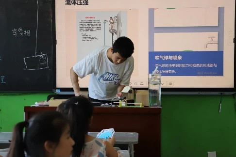
图1/2 太阳能追光板/生产线测距警示灯（阜平/沂南）
沂南地区的特色产业——肉鸭养殖加工中，流水线对肉鸭之间的间距有严格要求，过近或过远都会影响生产效率和产品质量。针对这一问题，“E心沂意”支队在课程中开发了一款超声波测距报警装置，以实现流水线作业中距离监控的智能化，提升了流水线操作的安全性和效率，为当地提出了青年学生的技术思考。
“电子之桥”支队在新田一中开展了以Arduino与C语言为核心的科技支教，设计了“辣椒补光机器人”“木耳菌包搬运机械手”等实践项目。他们将编程技能与农业需求紧密结合，让学生们学习技术的同时，增强了对本土农业的认同感。
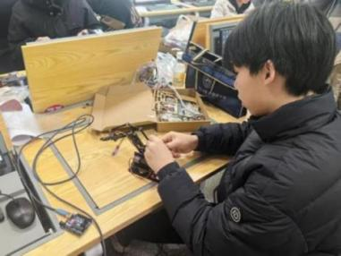
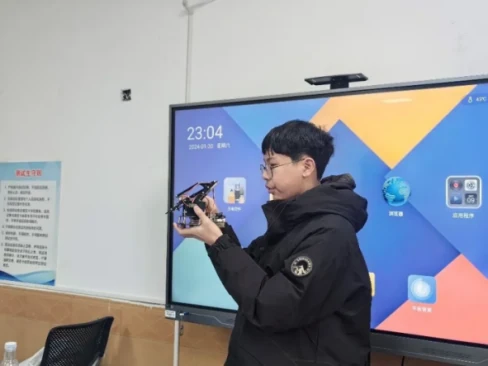
图3/4 学生设计的木耳菌包搬运机械手作品（永州）
（二）第二产业的科技教育实践
在包头，中小学实践教育长期以手工、劳动为主，与本地产业脱节。“芯联鹿城”支队在包头九中开展单片机支教时，发现学生对包钢、稀土的认知仍停留在“炼铁”“挖矿”层面。为此，支队设计了与本地产业结合的课程，如通过温湿度传感器模拟钢厂环境监控系统，使学生直观感受到电子技术与家乡产业的联系。问卷显示，课后能准确说出电子技术应用场景的学生从11%大幅提升至91%。
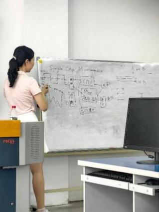
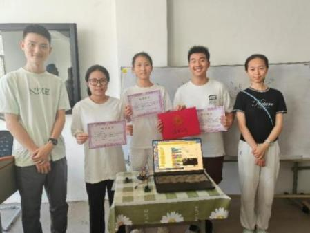
图5/6 单片机教学与学生设计的流水线指示灯（包头）
在柳州，柳铁一中的学生因应试压力大，难以对编程等形成持续兴趣。“E登龙门”支队通过单片机与AI基础课程，结合柳工、五菱等企业案例，激发了学生对智能制造的探索欲望。调研数据显示，92%的学生认为课程有收获，部分学生表达了“为家乡工业设计电子设备”的职业意向。
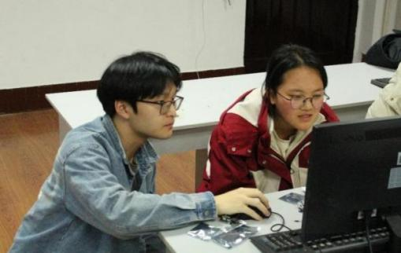
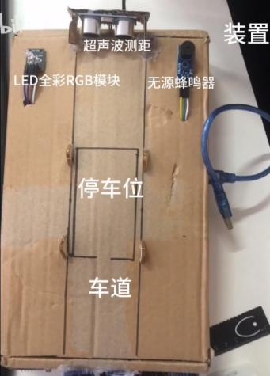
图7/8 简化的车辆控制编程/智能停车位设计（柳州/常德）
在常德，实践教育此前与智慧城市产业的关联几近于无。“柳岸芯声”支队在常德一中的调研显示，七成学生不了解“智慧常德”建设，一半以上对城市智慧化概念感到陌生，甚至超过10%的学生不知道常德是国家智慧城市试点。针对这一认知断层，支队设计了以“智慧城市治理”为核心的单片机课程体系，引导学生完成智能传感、交通信号模拟等与常德实际城市管理场景紧密相关的结业项目。
（三）第三产业的科技教育实践
“E片冰芯”支队在哈尔滨第三中学开设了以亚冬会为主题的单片机科技冬令营课程，结合电子信息知识与冰雪运动应用，鼓励学生开发“亚冬会中的智能电子系统”。队员授课结合产业调研分享前沿科技案例，如联通赛事保障网络或本地敏感元件企业的研发故事，引导学生将所学与家乡产业发展联系。
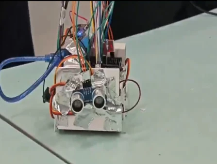
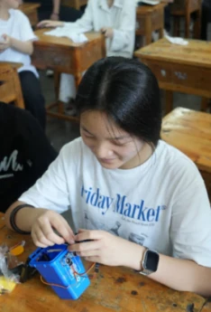
图9/10 学生制作的滑冰场安全传感器与智能灯光调色板（哈尔滨/重庆）
重庆的“E艺渝行”支队在江津区中山学校开设“艺术+科技”课程，通过讲座展示无人机灯光秀、数字非遗展等案例，让孩子们了解到家乡夜景背后蕴含的电子信息技术。在实践环节，学生制作了智能非遗灯光调色板、光控发电装置等作品，将科学实验与艺术创作结合。这些成果在结营仪式上展出，得到校方的高度评价，学生心得中普遍反映：“原来科技课还能这样上！”他们的案例说明，将人才培养与地方文化产业相结合，不仅拓展了青少年的科学与艺术素养，也为地方文旅与非遗产业数字化转型提供了后备力量。
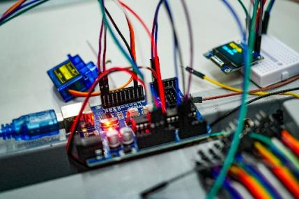
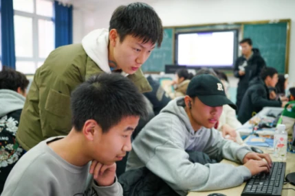
图11/12 电子骰子硬件搭建与程序debug（广安）
广安的“賨风E彩”支队则在中小城市教育场景中展现了基层人才培养的潜力。支队围绕“五育”发展不平衡问题，在常规学科辅导之外，设计了科技实践课程。队员带领学生完成了LED灯闪烁、“电子骰子”等简易编程项目，让许多农村学生第一次接触智能硬件，激发了极大兴趣。此外，在书法课中，队员引导学生思考科技与书法的结合，部分学生提出开发练字App或机械臂模拟书写的想法。虽然稚嫩，却体现了将传统文化与现代科技结合的探索意识
四、总结与展望
本报告通过对全国多个典型地区的深入调研，系统剖析了我国不同产业在现代化进程中面临的共性阻碍、数字化转型的实践路径及人才培养的关键作用。支队实践调研发现，尽管各地区在产业基础、资源禀赋和发展阶段上存在差异，但其共同的结构性瓶颈——如基础设施薄弱、产业链附加值不高、人才储备不足等——均强烈指向以电子信息技术赋能产业变革的内在必然性与紧迫性。
调研成果进一步揭示，数字化转型并非单一的技术迭代，而是一场涵盖生产方式、商业模式、组织形态与人才结构的系统性革命，各地正依据自身特色，探索技术赋能、生态构建与价值重塑的多元路径。与此同时，各实践支队的教育创新表明，将电子信息技术与地方产业场景相结合的项目式教学，能有效激发青少年对家乡产业的认知与认同，为地方数字化转型储备了宝贵的本土人才，形成了“产业转型”与“人才培育”相互促进的良性循环。
展望未来，各地均在探索一条以电子信息技术的深度应用来重塑特色产业竞争力的道路。其共性经验在于：以技术赋能，如传感器、物联网等，夯实数据基础与优化核心环节，以模式创新，如数字营销、平台经济等，拓展价值链与激活新需求，并以生态构建，如产教融合、政企协同等，培育持续转型的土壤。唯有如此，方能在全球产业竞争与科技革命浪潮中，真正实现从“追赶”到“并行”乃至“引领”的高质量发展跨越。